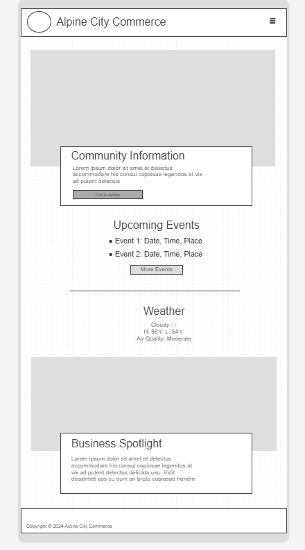
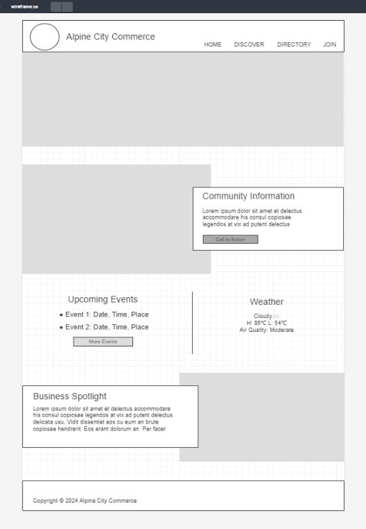

Alpine Chamber of Commerce Site Plan
Alpine Chamber of Commerce
This name was selected to represent the town of the chamber of commerce which is Alpine.
Site Purpose
The purpose of the Alpine Chamber of Commerce website is to promote local businesses as well as help create
a sense of community among the residents of Alpine
Scenarios
Here are some common questions visitors might have:
- What upcoming events are scheduled for business networking?
- How do I find the contact details for the chamber's board of directors?
- What resources are available for members?
Color Schema
The selected color schema includes:
- Green (647F63):Used for headers and buttons to reflect wealth, health and nature.
- Tan (E2C7B6): Used for background to ensure readability and cleanliness.
Typography
The following fonts will be used:
- Headings: 'Poppins', sans-serif – to convey modernity and professionalism.
- Body Text: 'Source Sans 3', sans-serif – for its readability across devices.
Wireframe
A rough sketch of the homepage layout will include:
Mobile View:
- Header with logo and hamburger icon for navigation menu
- Community Information with image
- Upcoming Events | Weather Information
- Business Spotlight
- Footer with contact information and social media links

Desktop View:
- Header with logo and main navigation
- Hero image with welcome message
- Community Information with image
- Upcoming Events | Weather Information
- Business Spotlight
- Footer with contact information and social media links
